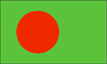

{kind=link}


![[Country map of Bangladesh]](../maps/bg-map.jpg)
| Bangladesh |  |
|
| | |
| Introduction |
Background: Bangladesh came into existence in 1971 when Bengali East Pakistan seceded from its union with West Pakistan. A third of this desperately poor country annually floods during the monsoon rainy season, hampering normal economic development.
| Geography |
Location: Southern Asia, bordering the Bay of Bengal, between Burma and India
Geographic coordinates: 24 00 N, 90 00 E
Map references: Asia
Area:
total:
144,000 sq km
land:
133,910 sq km
water:
10,090 sq km
Area - comparative: slightly smaller than Wisconsin
Land boundaries:
total:
4,246 km
border countries:
Burma 193 km, India 4,053 km
Coastline: 580 km
Maritime claims:
contiguous zone:
18 nm
continental shelf:
up to the outer limits of the continental margin
exclusive economic zone:
200 nm
territorial sea:
12 nm
Climate: tropical; cool, dry winter (October to March); hot, humid summer (March to June); cool, rainy monsoon (June to October)
Terrain: mostly flat alluvial plain; hilly in southeast
Elevation extremes:
lowest point:
Indian Ocean 0 m
highest point:
Keokradong 1,230 m
Natural resources: natural gas, arable land, timber
Land use:
arable land:
73%
permanent crops:
2%
permanent pastures:
5%
forests and woodland:
15%
other:
5% (1993 est.)
Irrigated land: 31,000 sq km (1993 est.)
Natural hazards: droughts, cyclones; much of the country routinely flooded during the summer monsoon season
Environment - current issues: many people are landless and forced to live on and cultivate flood-prone land; limited access to potable water; water-borne diseases prevalent; water pollution especially of fishing areas results from the use of commercial pesticides; intermittent water shortages because of falling water tables in the northern and central parts of the country; soil degradation; deforestation; severe overpopulation
Environment - international agreements:
party to:
Biodiversity, Climate Change, Desertification, Endangered Species, Environmental Modification, Hazardous Wastes, Nuclear Test Ban, Ozone Layer Protection, Wetlands
signed, but not ratified:
Law of the Sea
| People |
Population: 129,194,224 (July 2000 est.)
Age structure:
0-14 years:
36% (male 24,055,675; female 22,918,354)
15-64 years:
60% (male 39,924,040; female 37,992,459)
65 years and over:
4% (male 2,342,134; female 1,961,562) (2000 est.)
Population growth rate: 1.59% (2000 est.)
Birth rate: 25.44 births/1,000 population (2000 est.)
Death rate: 8.73 deaths/1,000 population (2000 est.)
Net migration rate: -0.77 migrant(s)/1,000 population (2000 est.)
Sex ratio:
at birth:
1.06 male(s)/female
under 15 years:
1.05 male(s)/female
15-64 years:
1.05 male(s)/female
65 years and over:
1.19 male(s)/female
total population:
1.05 male(s)/female (2000 est.)
Infant mortality rate: 71.66 deaths/1,000 live births (2000 est.)
Life expectancy at birth:
total population:
60.16 years
male:
60.4 years
female:
59.91 years (2000 est.)
Total fertility rate: 2.85 children born/woman (2000 est.)
Nationality:
noun:
Bangladeshi(s)
adjective:
Bangladesh
Ethnic groups: Bengali 98%, Biharis 250,000, tribals less than 1 million
Religions: Muslim 88.3%, Hindu 10.5%, other 1.2%
Languages: Bangla (official), English
Literacy:
definition:
age 15 and over can read and write
total population:
38.1%
male:
49.4%
female:
26.1% (1995 est.)
| Government |
Country name:
conventional long form:
People's Republic of Bangladesh
conventional short form:
Bangladesh
former:
East Pakistan
Data code: BG
Government type: republic
Capital: Dhaka
Administrative divisions:
5 divisions; Barisal, Chittagong, Dhaka, Khulna, Rajshahi
note:
there may be one additional division named Sylhet
Independence: 16 December 1971 (from Pakistan)
National holiday: Independence Day, 26 March (1971)
Constitution: 4 November 1972, effective 16 December 1972, suspended following coup of 24 March 1982, restored 10 November 1986, amended many times
Legal system: based on English common law
Suffrage: 18 years of age; universal
Executive branch:
chief of state:
President Shahabuddin AHMED (since 9 October 1996); note - the president's duties are normally ceremonial, but with the 13th amendment to the constitution ("Caretaker Government Amendment"), the president's role becomes significant at times when Parliament is dissolved and a caretaker government is installed - at presidential direction - to supervise the elections
head of government:
Prime Minister Sheikh HASINA Wajed (since 23 June 1996)
cabinet:
Cabinet selected by the prime minister and appointed by the president
elections:
president elected by National Parliament for a five-year term; election last held 24 July 1996 (next to be held by NA October 2001); following legislative elections, the leader of the party that wins the most seats is usually appointed prime minister by the president
election results:
Shahabuddin AHMED elected president without opposition; percent of National Parliament vote - NA
Legislative branch:
unicameral National Parliament or Jatiya Sangsad (330 seats; 300 elected by popular vote from single territorial constituencies, 30 seats reserved for women; members serve five-year terms)
elections:
last held 12 June 1996 (next to be held NA 2001)
election results:
percent of vote by party - AL 33.87%, BNP 30.87%; seats by party - AL 178, BNP 113, JP 33, JI 3, other 2, election still to be held for 1 seat; note - the elections of 12 June 1996 brought to power an Awami League government for the first time in twenty-one years; held under a neutral, caretaker administration, the elections were characterized by a peaceful, orderly process and massive voter turnout, ending a bitter two-year impasse between the former BNP and opposition parties that had paralyzed National Parliament and led to widespread street violence
Judicial branch: Supreme Court, the Chief Justices and other judges are appointed by the president
Political parties and leaders: Awami League or AL [Sheikh HASINA Wajed]; Bangladesh Communist Party or BCP [Saifuddin Ahmed MANIK]; Bangladesh Nationalist Party or BNP [Khaleda ZIAur Rahman]; Jamaat-E-Islami or JI [Motiur Rahman NIZAMI]; Jatiyo Party or JP [Hussain Mohammad ERSHAD]
International organization participation: AsDB, C, CCC, CP, ESCAP, FAO, G-77, IAEA, IBRD, ICAO, ICC, ICFTU, ICRM, IDA, IDB, IFAD, IFC, IFRCS, IHO (pending member), ILO, IMF, IMO, Inmarsat, Intelsat, Interpol, IOC, IOM, ISO, ITU, MINURSO, MONUC, NAM, OIC, OPCW, SAARC, UN, UN Security Council (temporary), UNCTAD, UNESCO, UNHCR, UNIDO, UNIKOM, UNMIBH, UNMIK, UNMOP, UNMOT, UNOMIG, UNTAET, UNU, UPU, WCL, WFTU, WHO, WIPO, WMO, WToO, WTrO
Diplomatic representation in the US:
chief of mission:
Ambassador Khwaja Mohammad SHEHABUDDIN
chancery:
2201 Wisconsin Avenue NW, Washington, DC 20007
telephone:
[1] (202) 342-8372
consulate(s) general:
Los Angeles and New York
Diplomatic representation from the US:
chief of mission:
Ambassador John C. HOLZMAN
embassy:
Diplomatic Enclave, Madani Avenue, Baridhara, Dhaka 1212
mailing address:
G. P. O. Box 323, Dhaka 1000
telephone:
[880] (2) 884700 through 884722
FAX:
[880] (2) 883744
Flag description: green with a large red disk slightly to the hoist side of center; the red sun of freedom represents the blood shed to achieve independence; the green field symbolizes the lush countryside, and secondarily, the traditional color of Islam
| Economy |
Economy - overview: Despite sustained domestic and international efforts to improve economic and demographic prospects, Bangladesh remains one of the world's poorest, most densely populated, and least developed nations. The economy is largely agricultural, with the cultivation of rice the single most important activity in the economy. Major impediments to growth include frequent cyclones and floods, the inefficiency of state-owned enterprises, a rapidly growing labor force that cannot be absorbed by agriculture, delays in exploiting energy resources (natural gas), inadequate power supplies, and slow implementation of economic reforms. Prime Minister Sheikh HASINA Wajed's Awami League government has made some headway improving the climate for foreign investors and liberalizing the capital markets; for example, it has negotiated with foreign firms for oil and gas exploration, better countrywide distribution of cooking gas, and the construction of natural gas pipelines and power plants. Progress on other economic reforms has been halting because of opposition from the bureaucracy, public sector unions, and other vested interest groups. The especially severe floods of 1998 increased the country's reliance on large-scale international aid. So far the East Asian financial crisis has not had major impact on the economy.
GDP: purchasing power parity - $187 billion (1999 est.)
GDP - real growth rate: 5.2% (1999 est.)
GDP - per capita: purchasing power parity - $1,470 (1999 est.)
GDP - composition by sector:
agriculture:
30%
industry:
17%
services:
53% (1999 est.)
Population below poverty line: 35.6% (FY95/96 est.)
Household income or consumption by percentage share:
lowest 10%:
4.1%
highest 10%:
23.7% (1992)
Inflation rate (consumer prices): 9% (FY98/99 est.)
Labor force:
56 million (1995-96)
note:
extensive export of labor to Saudi Arabia, Kuwait, UAE, Oman, Qatar, Malaysia, and Singapore
Labor force - by occupation: agriculture 63%, services 26%, industry 11% (FY95/96)
Unemployment rate: 35.2% (1996)
Budget:
revenues:
$4.3 billion
expenditures:
$6.5 billion, including capital expenditures of $NA (1997)
Industries: cotton textiles, jute, garments, tea processing, paper newsprint, cement, chemical fertilizer, light engineering, sugar
Industrial production growth rate: 2.5% (1997 est.)
Electricity - production: 12.5 billion kWh (1999 est.)
Electricity - production by source:
fossil fuel:
98%
hydro:
2%
nuclear:
0%
other:
0% (1999)
Electricity - consumption: 11.039 billion kWh (1998)
Electricity - exports: 0 kWh (1999)
Electricity - imports: 0 kWh (1999)
Agriculture - products: rice, jute, tea, wheat, sugarcane, potatoes; beef, milk, poultry, tobacco, pulses, oilseeds, spices, fruit
Exports: $5.1 billion (1998)
Exports - commodities: garments, jute and jute goods, leather, frozen fish and seafood
Exports - partners: US 33%, Germany 10%, UK 9%, France 6%, Italy 5% (1997)
Imports: $8.01 billion (1998)
Imports - commodities: machinery and equipment, chemicals, iron and steel, textiles, raw cotton, food, crude oil and petroleum products, cement
Imports - partners: India 12%, China 9%, Japan 7%, Hong Kong 6%, South Korea 6% (1997)
Debt - external: $16.5 billion (1998)
Economic aid - recipient: $1.475 billion (FY96/97)
Currency: 1 taka (Tk) = 100 poisha
Exchange rates: taka (Tk) per US$1 - 51.000 (January 2000), 49.085 (1999), 46.906 (1998), 43.892 (1997), 41.794 (1996), 40.278 (1995)
Fiscal year: 1 July - 30 June
| Communications |
Telephones - main lines in use: 470,000 (1998)
Telephones - mobile cellular: 41,000 (1998)
Telephone system:
domestic:
modernizing; introducing digital systems; trunk systems include VHF and UHF microwave, and some fiber-optic cable in cities
international:
satellite earth stations - 2 Intelsat (Indian Ocean); international radiotelephone communications and landline service to neighboring countries
Radio broadcast stations: AM 12, FM 12, shortwave 2 (1999)
Radios: 6.15 million (1997)
Television broadcast stations: 15 (1999)
Televisions: 770,000 (1997)
Internet Service Providers (ISPs): 6 (1999)
| Transportation |
Railways:
total:
2,745 km
broad gauge:
923 km 1.676-m gauge
narrow gauge:
1,822 km 1.000-m gauge (1998 est.)
Highways:
total:
201,182 km
paved:
19,112 km
unpaved:
182,070 km (1997 est.)
Waterways: 5,150-8,046 km navigable waterways (includes 2,575-3,058 km main cargo routes)
Pipelines: natural gas 1,220 km
Ports and harbors: Chittagong, Dhaka, Mongla Port
Merchant marine:
total:
36 ships (1,000 GRT or over) totaling 284,489 GRT/405,845 DWT
ships by type:
bulk 2, cargo 28, container 1, petroleum tanker 2, refrigerated cargo 1, roll-on/roll-off 2 (1999 est.)
Airports: 16 (1999 est.)
Airports - with paved runways:
total:
16
over 3,047 m:
2
2,438 to 3,047 m:
2
1,524 to 2,437 m:
5
914 to 1,523 m:
1
under 914 m:
6 (1999 est.)
| Military |
Military branches: Army, Navy, Coast Guard, Air Force, paramilitary forces (includes Bangladesh Rifles, Bangladesh Ansars, Village Defense Parties, National Cadet Corps), Armed Police battalions
Military manpower - availability:
males age 15-49:
34,683,414 (2000 est.)
Military manpower - fit for military service:
males age 15-49:
20,565,193 (2000 est.)
Military expenditures - dollar figure: $559 million (FY96/97)
Military expenditures - percent of GDP: 1.8% (FY96/97)
| Transnational Issues |
Disputes - international: a portion of the boundary with India is indefinite; dispute with India over South Talpatty/New Moore Island
Illicit drugs: transit country for illegal drugs produced in neighboring countries